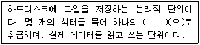
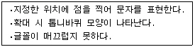
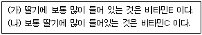
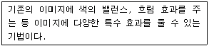
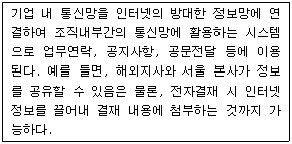

워드프로세서-2급(폐지) (2007-10-14 기출문제)
1과목: 워드프로세서 용어 및 기능
1. 다음 중 문서의 작성 및 관리에 관한 설명으로 옳지 않은 것은?
- 만일의 사태에 대비하여 문서를 가능한 자주 저장하는 것이 좋다.
- 문서 관리의 효율성을 위하여 파일명은 가능한 짧게 지정하는 것이 좋다.
- 문서 데이터 파일을 프로그램 파일과 다른 별도의 폴더에 저장하는 것이 좋다.
- 체계적인 문서의 작성을 위해서는 유형(Style)을 이용하는 것이 좋다.
(정답률: 68%)

2. 다음 중 문서 작성 시 글자를 지우는 방법에 대한 설명으로 옳지 않은 것은?
- 수정 혹은 겹침(Overwrite) 상태에서 [Space] 키를 누르면 커서 다음의 한 글자가 지워진다.
- 수정 혹은 겹침(Overwrite) 상태에서 [Delete] 키를 누르면 커서 다음의 한 글자가 지워진다.
- 삽입(Insert) 상태에서 [Back Space] 키를 누르면 커서 앞의 한 글자가 지워진다.
- 삽입(Insert) 상태에서 [Space] 키를 누르면 커서 다음의 한 글자가 지워진다.
(정답률: 73%)
3. 다음 중 글자와 배경이 반대로 나타나는 문자는?
- 강조 문자
- 테두리 문자
- 역상 문자
- 그림자 문자
(정답률: 84%)
4. 다음 중에서 나머지 셋과 성격이 다른 키는?
- [Alt]
- [Ctrl]
- [Shift]
- [Caps Lock]
(정답률: 94%)
5. 다음 중 치환(Replace)에 대한 설명으로 옳지 않은 것은?
- 영역을 지정하여 해당 부분만 치환할 수 있다.
- 한글, 영문 이외에 특수 문자도 치환할 수 있다.
- 치환 기능을 이용하여 문서의 일부분을 일정한 기준으로 정렬할 수 있다.
- 특정 문자의 글자 크기, 글자체 등을 변경할 수 있다.
(정답률: 63%)
6. 다음 중 금칙처리에 대한 설명으로 옳지 않은 것은?
- 행말 금칙문자로는 %, !, ?, >, [, ( 등이 있다.
- 금칙문자에는 행두 금칙문자와 행말 금칙문자가 있다.
- 행의 처음이나 끝에 쓰일 수 없는 문자나 기호를 행의 끝이나 다음 행의 처음으로 옮겨주는 기능이다.
- 숫자나 영문자는 금칙문자에 해당되지 않는다.
(정답률: 84%)
7. 다음 중 워드프로세서 용어에 관한 설명으로 옳지 않은 것은?
- 머지(Merge) : 두 개의 문서를 하나로 합치는 기능
- 색인(Index) : 표 또는 그림에 제목이나 설명으로 붙이는 기능
- 각주(Footnote) : 문서의 특정한 부분에 대한 부가 설명을 페이지 하단에 모아 표시하는 기능
- 미리 보기(Preview) : 편집한 문서를 인쇄하기 전에 화면에 미리 출력시켜보는 기능
(정답률: 72%)
8. 다음 중 ‘한글과 컴퓨터’라는 문장을 ‘한’ 이라는 약어로 등록시킨 후 필요시 ‘한’을 입력하여 쉽게 입력되게 하는 기능은?
- 상용구(Glossary)
- 스타일(Style)
- 매크로(Macro)
- 캡션(Caption)
(정답률: 82%)
9. 다음 중 인쇄용지에서 낱장 용지에 대한 설명으로 옳지 않은 것은?
- 한국공업규격에 따라 A판과 B판으로 나눈다.
- 호가 작을수록 용지의 면적이 작다.
- A판과 B판은 같은 호일 때 B판이 더 크다.
- 주로 잉크젯, 레이저 프린터에 사용된다.
(정답률: 80%)
10. 다음 중 보기 내용의 ( ) 안에 들어갈 적절한 용어는?

- 트랙(Track)
- FAT(File Allocation Table)
- 실린더(Cylinder)
- 클러스터(Cluster)
(정답률: 54%)
11. 다음 중 메모리의 한 영역으로 잘라내거나 복사하는 문서의 일부분을 임시로 보관해 두는 곳을 무엇이라고 하는가?
- 캐시(Cache)
- 스풀(Spool)
- 버퍼(Buffer)
- 클립아트(Clip Art)
(정답률: 78%)
12. 다음 중 문서의 집중 관리 및 처리, 문서 용지의 이면지 사용 등과 관련이 있는 사무 관리의 원칙은?
- 용이성
- 정확성
- 신속성
- 경제성
(정답률: 83%)
13. 다음 보기의 내용은 어떤 글꼴을 설명한 것인가?

- 비트맵 폰트(Bitmap Font)
- 트루 타입 폰트(True Type Font)
- 벡터 폰트(Vector Font)
- 포스트 스크립트 폰트(Post Script Font)
(정답률: 87%)
14. 다음 중 문자, 그림, 음성, 비디오 등을 서로 유기적으로 결합하여 참조할 수 있는 기능은?
- 갈무리
- 캡션(Caption)
- 화면 캡처(Screen Capture)
- 하이퍼미디어(Hypermedia)
(정답률: 85%)
15. 공고문서의 경우에 특별한 규정이 있는 경우를 제외하고는 그 고시 또는 공고가 있은 후 며칠이 경과한 날로부터 효력을 발생하는가?
- 1일
- 3일
- 5일
- 7일
(정답률: 89%)
16. 다음 중 토글 키가 아닌 것은?
- [Caps Lock]
- [Insert]
- [Scroll Lock]
- [Delete]
(정답률: 84%)
17. 다음 중에서 눈금자(Ruler)와 가장 관련이 적은 것은?
- 그림이나 도표의 위치
- 문단 좌/우 폭의 위치
- 탭의 위치
- 들여 쓰기와 내어 쓰기의 상태
(정답률: 50%)
18. 다음 중 인쇄 기능에 대한 설명으로 옳지 않은 것은?
- 모든 프린터는 고유한 프린터 드라이버를 가지고 있다.
- 피치(Pitch)가 클수록 문자와 문자 사이의 간격이 넓게 인쇄된다.
- 프린터의 해상도를 나타내는 단위는 DPI이다.
- 레이저 프린터의 인쇄 속도 단위는 PPM을 사용한다.
(정답률: 71%)
19. 다음 중 서로 반대되는 의미를 갖는 교정부호가 아닌 것은?
(정답률: 83%)
20. 다음은 (가)의 문장을 교정 부호를 사용하여 (나)의 문장 형태로 수정한 것이다. 수정할 때 사용된 교정 부호의 순서가 올바르게 나열된 것은?

(정답률: 94%)
2과목: PC 운영 체제
21. 다음 중 한글 Windows XP의 [그림판] 프로그램에서 작업한 내용을 저장하려고 할 경우에 기본(Default)으로 저장되는 파일 형식은?
- .DOC
- .TXT
- .BMP
- .WAV
(정답률: 77%)
22. 다음 중 한글 Windows XP에서 디스크 오류 검사를 통해 오류를 수정할 수 있는 드라이브로 옳지 않은 것은?
- 하드디스크 드라이브
- 메모리 카드
- 램 드라이브
- CD-ROM 드라이브
(정답률: 60%)
23. 한글 Windows XP의 [제어판]에 있는 [디스플레이 등록 정보] 창에서 설정하는 내용으로 픽셀 수에 따른 화면의 선명한 정도를 의미하는 것은?
- 색 품질
- 화면 해상도
- 화면 재생 빈도
- 테마
(정답률: 84%)
24. 한글 Windows XP에서 파일의 이동이나 복사에 관한 설명으로 옳은 것은?
- [휴지통]에 있는 파일을 다른 위치로 복사할 수 있다.
- 다른 디스크 드라이브의 폴더로 파일을 드래그 앤 드롭하면 해당 파일이 복사된다.
- 바로 가기 아이콘을 복사하면 연결된 실제 파일도 같이 복사된다.
- 파일을 복사할 때 사용하는 바로 가기 키는 [Ctrl]+[X] 키와 [Ctrl]+[V] 키이다.
(정답률: 52%)
25. 다음 중 한글 Windows XP의 [인터넷 프로토콜(TCP/IP) 등록 정보] 창에서 인터넷을 사용하기 위한 필수 설정 항목이 아닌 것은?
- 기본 게이트웨이
- WINS 구성
- IP 주소
- 기본 설정 DNS 서버
(정답률: 67%)
26. 다음 중 한글 Windows XP에서 제공하는 [도움말 및 지원] 기능에 대한 설명으로 옳지 않은 것은?
- 시작 메뉴에서 [도움말 및 지원] 항목을 선택하여 실행시킬 수 있다.
- 색인 기능을 이용하면 색인 목록을 스크롤하거나 키워드 단어를 입력하여 도움말을 찾을 수 있다.
- 필요 없는 도움말은 삭제할 수 있다.
- 찾은 도움말을 인쇄할 수 있다.
(정답률: 77%)
27. 한글 Windows XP의 [프로그램 추가/제거] 대화상자에서 [게임], [계산기], [그림판]과 같은 보조 프로그램 및 유틸리티를 추가 설치 또는 변경하기 위한 선택 항목은?
- [기본 프로그램 설정]
- [프로그램 추가/제거]
- [새 프로그램 추가]
- [Windows 구성 요소 추가/제거]
(정답률: 62%)
28. 한글 Windows XP에서 시작 메뉴의 [검색]을 실행하여 파일 및 폴더를 검색할 경우에 사용 가능한 조건이 아닌 것은?
- 파일의 형식
- 파일의 내용에 포함하는 문자열
- 파일을 만든 날짜
- 파일의 수정 횟수
(정답률: 64%)
29. 다음 중 한글 Windows XP에서 인터넷을 연결할 경우에 점검해야 할 사항으로 가장 적절하지 않은 것은?
- 네트워크 카드나 케이블의 연결 상태를 확인한다.
- 네트워크 드라이브 연결이 가능한지 확인한다.
- 속도가 느린 경우에 ‘Tracert' 명령을 사용하여 원인을 파악한다.
- ‘Ping' 명령을 사용하여 접속하려는 사이트의 연결을 확인한다.
(정답률: 38%)
30. 한글 Windows XP에서 부팅할 때 들리는 Windows 시작 소리를 변경하는 방법을 올바르게 설명한 것은?
- [사운드 및 오디오 장치] 등록 정보 창의 [소리] 탭에서 설정한다.
- [사운드 및 오디오 장치] 등록 정보 창의 [오디오] 탭에서 설정한다.
- [내게 필요한 옵션] 등록 정보 창의 [소리] 탭에서 설정한다.
- [내게 필요한 옵션] 등록 정보 창의 [일반] 탭에서 설정한다.
(정답률: 66%)
31. 한글 Windows XP에서 바로 가기 아이콘에 대한 설명으로 옳지 않은 것은?
- 프로그램 경로가 저장된 파일로 ‘.LNK’라는 확장자를 갖는다.
- 바로 가기 아이콘을 삭제하더라도 대상 파일은 삭제되지 않는다.
- 모든 바로 가기 아이콘의 파일 크기는 같다.
- 모든 폴더, 프린터, 네트워크 드라이브, 디스크 드라이브에 대한 바로 가기 아이콘을 만들 수 있다.
(정답률: 71%)
32. 한글 Windows XP에서 제공하는 파일 시스템이 아닌 것은?
- FAT
- FAT32
- VFAT
- NTFS
(정답률: 57%)
33. 한글 Windows XP에서 [작업 표시줄]의 바로 가기 메뉴가 아닌 것은?
- 보내기
- 바탕 화면 보기
- 작업 관리자
- 속성
(정답률: 68%)
34. 한글 Windows XP의 [보조 프로그램]에 있는 [메모장]에 관한 설명으로 옳은 것은?
- 특정 단어만 글꼴을 변경할 수 있다.
- 그림 파일을 끼워 넣을 수 있다.
- 개체 삽입 기능을 사용할 수 있다.
- 페이지 여백을 설정할 수 있다.
(정답률: 53%)
35. 한글 Windows XP에서 작업 도중에 응답하지 않는 프로그램을 끝내는 방법에 대하여 가장 올바르게 설명한 것은?
- [Ctrl]+[Alt]+[Del] 키를 누른 다음 [Windows 작업 관리자] 대화상자에서 응답하지 않는 프로그램을 선택하고 [작업 끝내기]를 클릭한다.
- 시작 메뉴에 있는 [컴퓨터 끄기]를 선택하여 표시되는 [시스템 종료] 대화상자에서 [다시 시작]을 클릭한다.
- [제어판]에 [프로그램 추가/제거]를 선택하고 해당 프로그램을 삭제한다.
- 해당 프로그램의 창에서 [파일] 메뉴의 [닫기]를 클릭한다.
(정답률: 74%)
36. 다음 중 한글 Windows XP의 [휴지통]에서 복원이 가능한 항목은?
- [Delete] 키를 사용하여 삭제한 항목
- 플로피디스크, 네트워크 드라이브에서 삭제된 항목
- [휴지통 등록 정보] 창에서 [파일을 휴지통에 버리지 않고 삭제 명령 시 즉시 제거]를 설정한 후에 삭제된 항목
- [휴지통]에서 삭제한 항목
(정답률: 69%)
37. 다음 중 한글 Windows XP에서 마우스의 오른쪽 버튼을 눌렀을 때 나타나는 바로 가기 메뉴에 관한 설명으로 옳은 것은?
- [작업 표시줄]에서는 바로 가기 메뉴가 나타나지 않는다.
- 바로 가기 메뉴의 내용은 절대로 변경할 수 없다.
- 바로 가기 메뉴에 표시되는 각 항목은 하위 메뉴를 포함하지 않는다.
- 마우스 포인터가 위치한 영역에 따라서 바로 가기 메뉴의 항목이 다르게 표시된다.
(정답률: 56%)
38. 다음 중 한글 Windows XP에서 프린터로 인쇄가 전혀 되지 않는 문제가 발생하였을 경우에 문제 해결 방법으로 옳지 않은 것은?
- 프린터 전원이나 프린터 케이블이 제대로 연결되어 있는지 확인한다.
- 프린터의 이름이 변경되었거나 삭제되지 않았는지 확인한다.
- 로컬 프린터의 경우에 공유를 해제한다.
- 설정된 프린터의 드라이버가 제대로 설치되었는지 확인한다.
(정답률: 71%)
39. 다음 중 한글 Windows XP에서 하드디스크 드라이브의 등록 정보 창에 있는 [도구] 탭에서 할 수 있는 작업은?
- 오류 검사
- 자동 업데이트
- 디스크 정리
- 디스크 공유
(정답률: 40%)
40. 한글 Windows XP에서 [작업 표시줄]에 관한 설명으로 옳지 않은 것은?
- [작업 표시줄]에 있는 [시작] 단추를 제거할 수 있다.
- [작업 표시줄]은 바탕 화면의 다른 위치로 옮길 수 있다.
- [작업 표시줄]에 빠른 실행 아이콘을 표시할 수 있다.
- [작업 표시줄]의 알림 영역에 사용하지 않는 아이콘은 숨길 수 있다.
(정답률: 71%)
3과목: PC 기본 상식
41. 사람은 정보를 수집하고 처리하며 표현하고 저장하는 능력을 가지고 있다. 여기서 정보를 표현하는 기능은 컴퓨터의 어느 장치 기능과 일치하는가?
- 입력장치
- 기억장치
- 중앙처리장치
- 출력장치
(정답률: 54%)
42. 다음 PC의 연결 포트 중에서 케이블 없이 기기 간의 데이터 전송을 위해 적외선을 이용하는 포트는 어느 것인가?
- USB
- IrDA
- IEEE1394
- PS/2
(정답률: 59%)
43. 다음 중 멀티미디어 컨텐츠를 제작하는 저작도구와 거리가 먼 것은?
- 툴북(Tool Book)
- 디렉터(Director)
- 오소웨어(Authorware)
- 윈도 미디어 플레이어(Windows Media Player)
(정답률: 64%)
44. 다음 중 보기에서 설명하는 그래픽 기법과 가장 관련이 있는 것은?

- 랜더링(Rendering)
- 필터링(Filtering)
- 모핑(Morphing)
- 리터칭(Retouching)
(정답률: 47%)
45. 다음 중 네트워크를 규모가 작은 것부터 큰 것 순서대로 올바르게 나열한 것은?
- LAN - MAN - WAN
- MAN - WAN - LAN
- LAN - WAN - MAN
- MAN - LAN - WAN
(정답률: 76%)
46. 다음 중 바이러스 예방 방법에 관한 설명으로 옳지 않은 것은?
- 엑셀 파일은 바이러스가 존재하지 않으므로 다른 곳에서 복사한 엑셀 파일을 바이러스 검사 없이 편집해도 된다.
- 출처가 불분명한 첨부 파일의 경우 실행 전에 백신으로 검사하거나 삭제한다.
- 백신프로그램 설치 후에도 항상 최신 버전으로 업데이트한다.
- 친구로부터 온 전자우편에 첨부된 파일도 바이러스가 있을 수 있으므로 항상 바이러스 검사를 하고 실행시킨다.
(정답률: 79%)
47. 다음 중 근거리 통신망(LAN)의 효과로 옳지 않은 것은?
- 정보자원의 공유
- 정보처리 시스템의 비용 절감
- 통합된 사무자동화의 구축
- 같은 기종 간의 컴퓨터만 통신 가능
(정답률: 72%)
48. 다음 중에서 보안 위협의 형태가 아닌 것은?
- 바이러스(Virus)
- 트로이 목마(Trojan Horse)
- 인증(Authentication)
- 웜(Worm)
(정답률: 81%)
49. 다음 중 네트워크를 구성하는데 필요한 장비들에 관한 설명으로 옳지 않은 것은?
- 브리지(Bridge) - 받은 신호를 증폭시켜 먼 거리까지 전송
- 게이트웨이(Gateway) - 두 개의 다른 네트워크를 상호 접속
- 라우터(Router) - 네트워크에 메시지를 보낼 때 최적의 경로를 결정
- 허브(Hub) - 서로 다른 컴퓨터를 연결하며 회선을 통합적으로 관리
(정답률: 57%)
50. 컴퓨터 내부에서 중앙처리장치와 메모리 사이의 데이터 전송에 사용되는 통로를 버스(Bus)라고 한다. 다음 중 이 버스에 해당되지 않는 것은?
- 제어 버스(Control Bus)
- 프로그램 버스(Program Bus)
- 데이터 버스(Data Bus)
- 주소 버스(Address Bus)
(정답률: 73%)
51. 다음 중 멀티미디어 데이터를 처리하기 위한 소프트웨어에 속하지 않는 것은?
- 이미지 편집 프로그램
- 음악 저작 프로그램
- FTP 파일 전송 프로그램
- 동영상 편집 프로그램
(정답률: 72%)
52. 다음 중 컴퓨터의 발전 과정을 세대별로 분류할 때 운영체제가 등장하였으며, FORTRAN 및 COBOL이라는 고급 언어가 탄생한 세대는?
- 제 1세대
- 제 2세대
- 제 3세대
- 제 4세대
(정답률: 57%)
53. 다음 중 스트리밍(Streaming) 서비스에 대한 설명으로 옳지 않은 것은?
- 서버에서 사용자의 컴퓨터로 데이터가 전송되면서 동시에 재생되는 기술이다.
- 인터넷 방송과 주문형 비디오(VOD) 서비스에서 많이 사용한다.
- 저작권 보호에 불리한 서비스이다.
- 재생 도중 데이터가 끊기는 현상은 전송 데이터의 양이 대역폭보다 클 때 나타난다.
(정답률: 64%)
54. 다음 보기의 내용이 설명하고 있는 통신망은 무엇인가?

- Arpanet
- Externet
- Intranet
- Internet
(정답률: 77%)
55. 다음 중 주기억장치를 이루는 메모리 종류에 속하지 않는 것은?
- DRAM
- DDR SDRAM
- SRAM
- CD-ROM
(정답률: 68%)
56. 다음 중 응용소프트웨어에 속하지 않는 것은?
- V3
- Excel
- Linux
- PhotoShop
(정답률: 69%)
57. 다음 중 운영체제의 기능과 가장 거리가 먼 것은?
- 사용자와 컴퓨터간의 인터페이스 기능을 제공한다.
- 데이터 표 작성 및 차트 작성 기능을 제공한다.
- 오류 발생을 탐지하고 처리한다.
- 시스템 내의 자원을 관리한다.
(정답률: 52%)
58. 다음 중 정보통신 이용의 특징과 가장 거리가 먼 것은?
- 대형 컴퓨터의 독자적인 이용
- 대용량 자료의 공유
- 거리와 시간의 극복
- 정보의 신속한 전송
(정답률: 72%)
59. 여러 개의 하드디스크를 모아 하나의 디스크처럼 작동하게 하여 대용량의 파일을 저장할 수 있고, 하나의 파일을 여러 디스크에 동시에 저장할 수 있도록 하여 신뢰성을 높여줄 수 있는 저장장치와 다음 중 가장 관련이 있는 것은?
- ZIP-Drive
- DVD
- RAID
- Juke Box
(정답률: 65%)
60. 다음 중 소프트웨어를 공식적으로 발표하기 전에 성능 검사를 위해 일부 관계자나 사용자에게 제공하여 사용되는 것은?
- 패치 프로그램
- 베타 버전
- 셰어웨어
- 프리웨어
(정답률: 60%)